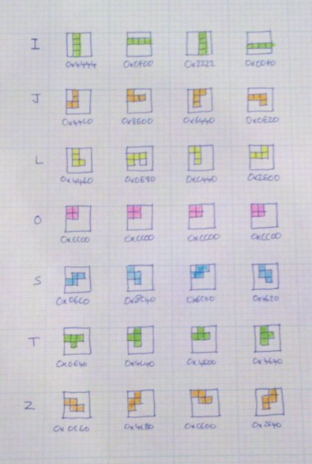

Advanced Algorithms and Data Structures
Intro to Machine Learning, Beam Search and Monte-Carlo Tree Search
Alex Avdiushenko
October 28, 2024

ML is built using the tools of mathematical statistics, numerical methods, mathematical analysis, optimization methods, probability theory, and various techniques for working with data in digital form.
What is it?
\[\begin{cases} \frac{\partial \rho}{\partial t} + \frac{\partial(\rho u_{i})}{\partial x_{i}} = 0 \\ \\ \frac{\partial (\rho u_{i})}{\partial t} + \frac{\partial[\rho u_{i}u_{j}]}{\partial x_{j}} = -\frac{\partial p}{\partial x_{i}} + \frac{\partial \tau_{ij}}{\partial x_{j}} + \rho f_{i} \end{cases} \]In machine learning, there is no pre-set model with equations...
Types of Machine Learning
- Supervised Learning: The algorithm is provided with labeled training data, and the goal is to learn a general rule that maps inputs to outputs
- Unsupervised Learning: The algorithm is provided with unlabeled data and must find the underlying structure in the data, like clustering or dimensionality reduction
- Reinforcement Learning: The algorithm learns by interacting with an environment and receiving feedback in the form of rewards or penalties
Main notations
$X$ — set of objects
$Y$ — set of answers
$y: X \to Y$ — unknown dependence (target function)
The task is to find, based on the training sample $\{x_1,\dots,x_\ell\} = X_\ell \subset X$
with known answers $y_i=y(x_i)$,
an algorithm ${\color{orange}a}: X \to Y$,
which is a decision function that approximates $y$ over the entire set $X$
The whole ML course is about this:
- how objects $x_i$ are defined and what answers $y_i$ can be
- in what sense ${\color{orange}a}$ approximates $y$
- how to construct the function ${\color{orange}a}$
$f_j: X \to D_j$
The vector $(f_1(x), \dots, f_n(x))$ is so called "feature description" of the object $x$
Types of features:
- $D_j = \{0, 1\}$ — binary
- $\#|D_j| < \infty $ — categorical
- $\#|D_j| < \infty, D_j$ ordered — ordinal
- $D_j = \mathbb{R}$ — real (quantitative)
Data matrix (objects and features as rows and columns):
$F = ||f_j(x_i)||_{\ell\times n} = \left[ {\begin{array}{ccc}
f_1(x_1) & \dots & f_n(x_1) \\
\vdots & \ddots & \vdots \\
f_1(x_\ell) & \dots & f_n(x_\ell)
\end{array} } \right]$
Types of tasks
Classification
- $Y = \{-1, +1\}$ — binary classification
- $Y = \{1, \dots, M\}$ — multiclass classification
- $Y = \{0, 1\}^M$ — multiclass with overlapping classes
Regression
$Y = \mathbb{R}\ $ or $\ Y = \mathbb{R}^m$
Ranking
$Y$ — finite ordered setPredictive Model
A model (predictive model) — a parametric family of functions
$A = \{g(x, \theta) | \theta \in \Theta\}$,
where $g: X \times \Theta \to Y$ — a fixed function, $\Theta$ — a set of allowable values of parameter $\theta$
Example
Linear model with vector of parameters $\theta = (\theta_1, \dots, \theta_n), \Theta = \mathbb{R}^n$:
$g(x, \theta) = \sum\limits_{j=1}^n \theta_jf_j(x)$ — for regression and ranking, $Y = \mathbb{R}$
$g(x, \theta) = \mathrm{sign}\left(\sum\limits_{j=1}^n \theta_jf_j(x)\right)$ — for classification, $Y = \{-1, +1\}$
Example: Regression Task, Synthetic Data
$X = Y = \mathbb{R}$, $\ell = 50$ objects
$n = 3$ features: $\{1, x, x^2\}$ or $\{1, x, \sin x\}$
Training Stage
The method $\mu$ constructs an algorithm $a = \mu(X_\ell, Y_\ell)$ from the sample $(X_\ell, Y_\ell) = (x_i, y_i)_{i=1}^\ell$
$\boxed{ \left[ {\begin{array}{ccc} f_1(x_1) & \dots & f_n(x_1) \\ \dots & \dots & \dots \\ f_1(x_\ell) & \dots & f_n(x_\ell) \end{array} } \right] \xrightarrow{y} \left[ {\begin{array}{c} y_1 \\ \dots \\ y_\ell \end{array} }\right] \thinspace} \xrightarrow{\mu} a$
Test Stage
The algorithm $a$ produces answers $a(x_i^\prime)$ for new objects $x_i^\prime$
Quality Functionals
$\mathcal{L}(a, x)$ — loss function. The error magnitude of the algorithm $a \in A$ on the object $x \in X$
Loss Functions for Classification Tasks:
- $\mathcal{L}(a, x) = [a(x)\neq y(x)]$ — indicator of error
- Cross entropy is distance between two vectors of probabilities
Loss Functions for Regression Tasks:
- $\mathcal{L}(a, x) = |a(x) - y(x)|$ — absolute error value
- $\mathcal{L}(a, x) = (a(x) - y(x))^2$ — quadratic error
Empirical risk — functional quality of the algorithm $a$ on $X^\ell$:
$Q(a, X^\ell) = \frac{1}{\ell} \sum\limits_{i=1}^\ell \mathcal{L}(a, x_i)$
Reducing the Learning Task to an Optimization Task
Method of minimizing empirical risk
$\mu(X^\ell) = \arg\min\limits_{a \in A} Q(a, X^\ell)$
Example: least squares method
$Y = \mathbb{R}, \mathcal{L}$ is quadratic:
$$\mu(X^\ell) = \arg\min\limits_{\theta} \sum\limits_{i=1}^{\ell} (g(x_i, \theta) - y_i)^2$$Generalization Ability Problem
- Will we find the "law of nature" or will we overfit, i.e., adjust the function $g(x_i, \theta)$ to the given points?
- Will $a = \mu(X^\ell)$ approximate the function $y$ over the entire $X$?
- Will $Q(a, X^k)$ be small enough on new data — the test set $X^k = (x_i^\prime, y_i^\prime)_{i=1}^k$, $y_i^\prime = y(x_i)$?
Overfitting — one of the main problems in machine learning
When test_score >> train_score
- What causes overfitting?
- Excessive complexity of the parameter space $\Theta$, extra degrees of freedom in the model $g(x, \theta)$ are "spent" on overly precise fit to the training sample
- Overfitting always occurs when there is optimization of parameters over a finite (inherently incomplete) sample
- How to detect overfitting?
- Empirically, by splitting the sample into train and test
- It's impossible to completely get rid of it. How to minimize?
- Minimize the error on validation (Hold Out, Leave One Out, Cross Validation), but with care!
- Put restrictions on $\theta$ (i.e. regularization)

What is Beam Search?
- An approximate search algorithm commonly used in natural language processing tasks like machine translation and speech recognition
- It is a variation of greedy search that explores multiple paths simultaneously, keeping track of the $k$ most promising paths at each step
- Beam search striking a compromise between the efficiency of greedy search and the optimality of exhaustive search
2000-s: Monte-Carlo Tree Search
- In the 2000s, Monte Carlo Tree Search (MCTS) algorithms were introduced, resulting in significant improvements in the performance of Go programs and other games
- We launch random simulations from the current position, observe which branches yield more wins, and then repeat the process

Monte Carlo Tree Search — UCB1
The main part of MCTS is the formula for selection of the next node. The UCB1 formula looks like this (the same as in multi-armed bandits):
$$ UCB1 = \frac{w_i}{n_i} + c \sqrt{\frac{\ln t}{n_i}} $$where:
- $w_i$ is the number of wins
- $n_i$ is the count of simulations for the node associated with action $i$
- $c$ is the parameter, by default $c=\sqrt{2}$
- $t = \sum\limits_i n_i$ is the total count of simulations for the parent node
The algorithm prefers actions with higher estimated rewards and higher uncertainties.
Now let's dive into Tetris in Javascript
Tricky part is dealing with rotation of the 7 tetrominoes
We encode each position of each piece with 16bit, that is four 4bit numbers:
It's time to look at the code!
Assignment
- The game is written in vanilla Javascript, so you need to understand the code
- Improve the current heuristic agent, adding new features and tuning the weights: 30 points
- Implement a new agent using Beam Search or MCTS: 30 points
- Write a report with the results and conclusions: 40 points
Please, try to make your report an interesting story, sequentially implementing the algorithms from the tasks. The clarity of the answers to the questions, the tidiness of the report and code are assessed during the verification.
Good luck and have fun!